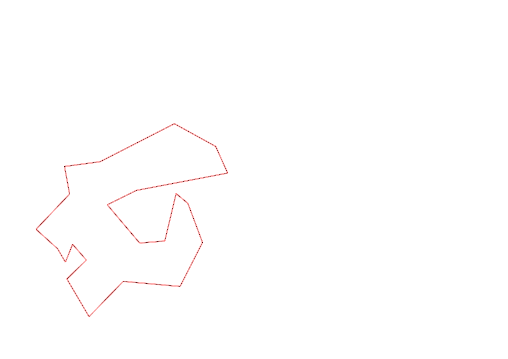
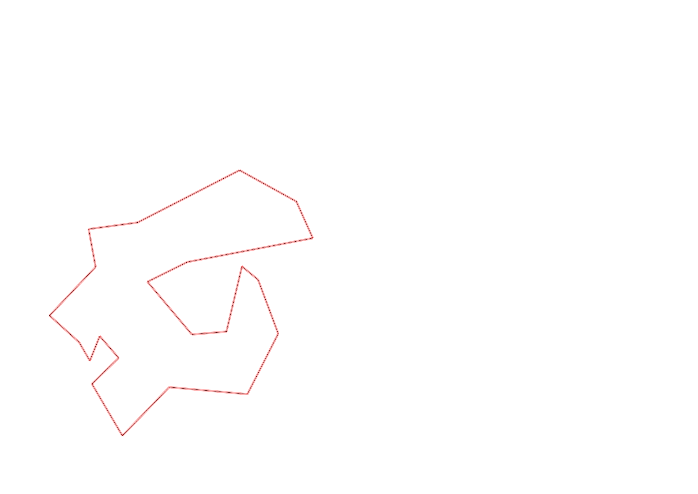

| Control |
Points |
Time Punched |
Distance |
Your Time |
Pace |
Place |
Fastest Time |
Median Time |
% Behind Fastest |
| 127 |
20 |
|
0.06 |
0:00:19 |
05:16 |
12 / 30 |
0:00:01 |
0:00:32 |
1800% |
| 42 |
40 |
|
0.17 |
0:02:14 |
13:08 |
16 / 20 |
0:01:06 |
0:01:52 |
103% |
| 61 |
60 |
|
0.21 |
0:03:53 |
18:29 |
15 / 20 |
0:02:20 |
0:03:34 |
66% |
| 59 |
50 |
|
0.24 |
0:02:33 |
10:37 |
12 / 19 |
0:01:47 |
0:02:30 |
42% |
| 77 |
70 |
|
0.21 |
0:02:09 |
10:14 |
5 / 17 |
0:01:25 |
0:02:33 |
51% |
| 40 |
40 |
|
0.18 |
0:02:26 |
13:31 |
5 / 18 |
0:01:16 |
0:02:38 |
92% |
| 41 |
40 |
|
0.11 |
0:00:39 |
05:54 |
4 / 20 |
0:00:28 |
0:01:07 |
39% |
| 54 |
50 |
|
0.09 |
0:01:44 |
19:15 |
6 / 8 |
0:00:57 |
0:01:28 |
82% |
| 71 |
70 |
|
0.08 |
0:00:28 |
05:50 |
2 / 5 |
0:00:23 |
0:00:29 |
21% |
| 69 |
60 |
|
0.06 |
0:01:26 |
23:53 |
3 / 5 |
0:01:13 |
0:01:26 |
17% |
| 53 |
50 |
|
0.12 |
0:01:51 |
15:25 |
12 / 26 |
0:01:16 |
0:01:51 |
46% |
| 44 |
40 |
|
0.2 |
0:01:49 |
09:05 |
13 / 22 |
0:00:39 |
0:01:40 |
179% |
| 32 |
30 |
|
0.12 |
0:01:17 |
10:41 |
10 / 22 |
0:00:43 |
0:01:19 |
79% |
| 63 |
60 |
|
0.15 |
0:01:45 |
11:40 |
18 / 25 |
0:01:05 |
0:01:29 |
61% |
| 107 |
100 |
|
0.35 |
0:05:54 |
16:51 |
22 / 22 |
0:02:14 |
0:03:49 |
164% |
| 57 |
50 |
|
0.2 |
0:02:46 |
13:50 |
6 / 22 |
0:01:54 |
0:03:53 |
45% |
| 92 |
90 |
|
0.12 |
0:04:10 |
34:43 |
9 / 18 |
0:02:10 |
0:04:22 |
92% |
| 126 |
20 |
|
0.39 |
0:05:49 |
14:54 |
3 / 3 |
-1 day, 23:15:07 |
0:04:00 |
-99% |
| 130 |
30 |
|
0.14 |
0:00:26 |
03:05 |
7 / 19 |
0:00:00 |
0:00:33 |
-% |
| 60 |
60 |
|
0.21 |
0:02:03 |
09:45 |
4 / 5 |
0:00:00 |
0:01:57 |
-% |
| 38 |
30 |
|
0.11 |
0:02:39 |
24:05 |
11 / 15 |
0:00:00 |
0:01:15 |
-% |
| Finish |
0 |
|
0.2 |
0:03:44 |
18:40 |
8 / 10 |
-1 day, 23:07:29 |
0:01:37 |
-99% |
Total Distance Covered: 3.72km
Points Scored: 1060
Late Penalty: 0
Final Score: 1060
Total Time: 0hours 52minutes 4seconds
Efficiency: 284.95 points/km
 
